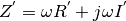

Distributed Impedance,
Defined as

Z : numpy.ndarray
Distributed impedance in units of ohm/m
skrf.media.freespace.Freespace.Y
skrf.media.freespace.Freespace.characteristic_impedance
Enter search terms or a module, class or function name.